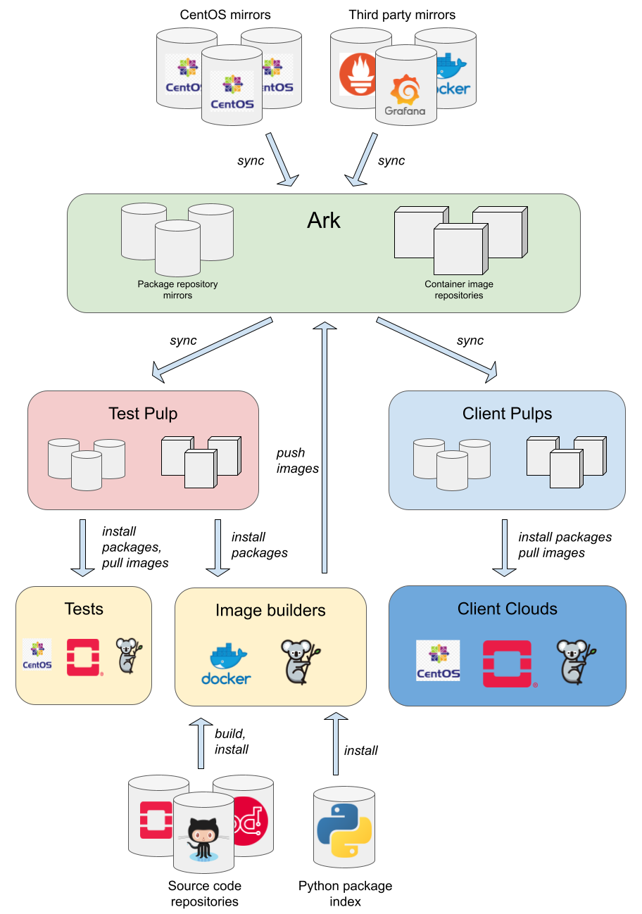

Architecture¶
This page covers architecture of the StackHPC release train. It assumes familiarity with the overview.
See the original release train design document for design & requirements.
Components¶
The following diagram shows the major components of the release train.

This diagram was created using Google Drawings.
Pulps¶
Pulp is a content server that manages repositories of software packages and facilitates their distribution to content consumers. The core functionality of Pulp is to provide versioned collections of software packages for onward distribution to consumers. Pulp's ability to host multiple snapshots of a repository make it a good choice for hosting the release train content.
There are three types of Pulp service in the release train architecture.
-
Ark is a public-facing production Pulp service hosted on a public cloud provider, leaf.cloud. It is the master copy of development and released content, and makes the content available to clients.
-
Clients access Ark via a Pulp service deployed on their local infrastructure. Content is synced from Ark to the local Pulp service, and control plane hosts acquire the content from there.
-
Test is an internal service running on the SMS lab cloud. Content is synced from Ark to
test, providing a local content mirror for testing in SMS lab. In some respects, the test Pulp service may be considered a client.
Content¶
Various different types of content are hosted by Pulp, including:
- RPM package repositories (Pulp RPM plugin)
- Rocky Linux distribution packages
- Third party packages
- Apt package repositories (Pulp Deb plugin)
- Ubuntu distribution packages
- Third party packages
- Container image repositories (Pulp container plugin)
- Kolla container images
- File repositories (Pulp file plugin)
- Disk images
Some of this content may be mirrored from upstream sources, while others are the result of release train build processes.
Access control¶
Access to released Pulp content is restricted to clients with a support agreement. Build and test processes also need access to content.
Package repositories¶
Access to package repositories is controlled via Pulp RBAC content guards.
Two content guards are in use - development and release.
The development content guard is assigned to unreleased content, while the release content guard is assigned to released content.
Clients are provided with a username and password which they use when syncing package repositories in their local Pulp service with Ark.
Clients' credentials are authorised to access content protected by the release content guard.
Build and test processes are provided with a user account that is authorised to access the development and release content guard.
Containers¶
Access to container images is controlled by token authentication, which uses Django users in the backend.
Two container namespaces are in use - stackhpc-dev and stackhpc.
The stackhpc-dev namespace is used for unreleased content, while the stackhpc namespace is used for released content.
Clients are provided with a set of credentials, which they use when syncing container image repositories in their local Pulp service with Ark.
Clients' credentials are authorised to pull from the stackhpc namespace.
Build and test processes are provided with credentials that are authorised to push to the stackhpc-dev namespace.
Syncing package repositories¶
At the top of the diagram above are the upstream sources. Some of these may be mirrored/synced into Ark, including:
- OS distribution package repositories, e.g. Rocky Linux 9 BaseOS
- Third party package repositories, e.g. Grafana
The Sync package repositories GitHub Actions workflow runs nightly and on demand, ensuring that we have regular versioned snapshots of these repositories. Synced content is immediately published and distributed, such that it is available to build & test processes. After a successful sync in Ark, the content is synced to the test Pulp service.
Mirrored content typically uses a policy of immediate, meaning that all content is downloaded from the upstream source during the sync.
This avoids issues seen with the on_demand policy where content that is removed from the upstream source becomes inaccessible if it has not been previously requested by a client.
For RPM content, we also use a sync_policy of mirror_complete, which removes content from the snapshots in line with upstream repositories (in contrast with the default additive sync_policy, which does not).
There are a couple of repositories for which mirror_complete does not work, so we use mirror_content_only instead.
Versioning¶
Package repositories are versioned based on the date/time stamp at the beginning of the sync workflow, e.g. 20211122T102435.
This version string is used as the final component of the path at which the corresponding distribution is hosted.
For example, a Rocky Linux 9 BaseOS snapshot may be hosted at https://ark.stackhpc.com/pulp/content/rocky/9/BaseOS/x86_64/os/20240105T044843/.
The rationale behind using a date/time stamp is that there is no sane way to version a large collection of content, such as a repository, in a way in which the version reflects changes in the content (e.g. SemVer). While the timestamp used is fairly arbitrary, it does at least provide a reasonable guarantee of ordering, and is easily automated.
Building¶
Build processes may take as input the synced repository mirrors and other external sources, including:
- Python Package Index (PyPI)
- StackHPC source code repositories
- Other source code repositories e.g. GitHub, OpenDev
The outputs of these build processes are pushed to Ark.
Build and test processes run on SMS cloud, to avoid excessive running costs. All content in Ark that is required by the build and test processes is synced to the test Pulp service running in SMS cloud, minimising data egress from Ark.
Kolla container images¶
Kolla container images are built via Kayobe, using a ci-builder environment in StackHPC Kayobe config.
The configuration uses the package repositories in Ark when building containers.
Images are built using a manually triggered GitHub Actions workflow.
The stackhpc-dev namespace in Ark contains container push repositories, which are pushed to using Kayobe.
The Sync container repositories GitHub Actions workflow runs demand, syncing container repositories in test Pulp service with those in Ark. It also configures container image distributions to be private, since they are public by default.
Kolla container images are versioned based on the OpenStack release name, OS distribution and the date/time stamp at the beginning of the build workflow, e.g. 2024.1-rocky-9-20240922T102435.
This version string is used as the image tag.
Unlike package repositories, container image tags allow multiple versions to be present in a distribution of a container repository simultaneously.
We therefore use separate namespaces for development (stackhpc-dev) and release (stackhpc).
Disk images¶
Overcloud host images are built via Kayobe, using the same ci-builder environment used to build Kolla container images.
Overcloud images are built using a manually triggered GitHub Actions workflow.
They are pushed to a Pulp file repository in Ark, and uploaded to the SMS lab Glance image service for all-in-one and multi-node testing.
Overcloud images are versioned based on the OpenStack release name, and the date/time stamp at the beginning of the build workflow, e.g. 2024.1-20240922T102435.
This version string is included in the Pulp distribution base_path of the image, e.g. https://ark.stackhpc.com/pulp/content/kayobe-images/2024.1/rocky/9/2024.1-20240922T102435/overcloud-rocky-9.qcow2
Testing¶
Release train content is tested via a Kayobe deployment of OpenStack.
A ci-aio environment in StackHPC Kayobe config provides a converged control/compute host for testing.
Various all-in-one OpenStack test configurations are run against pull requests opened against the StackHPC Kayobe config repository.
Promotion¶
Whether content is mirrored from an upstream source or built locally, it is not immediately released. Promotion describes the process whereby release candidate content is made into a release that is available to clients.
For package repositories and overcloud host images, promotion does not affect how content is accessed, only who may access it.
Promotion involves changing the content guard for the distribution to be released from development to release.
This makes the content accessible to clients using their client credentials.
The stackhpc container namespace contains regular container repositories, which cannot be pushed to via docker push.
Instead, we use the Pulp API to sync specific tags from stackhpc-dev to stackhpc.
Client Pulp service¶
Clients access Ark via a Pulp service deployed on their local infrastructure. Typically the Pulp service is deployed as a Pulp in one container running on the seed host. Content is synced from Ark to the local Pulp service, and control plane hosts acquire the content from there. This avoids excessive Internet bandwidth usage, both for the client and Ark.
Content in the client Pulp service is synced using the on_demand policy.
This avoids unnecessarily large storage requirements on the seed, and speeds up syncing.
There should be no risk of content becoming permanently unavailable, so long as Ark continues to host sufficiently old versions.
This approach does have a downside of requiring Ark to be available to provide any content which has not previously been downloaded.
Client configuration¶
In order to consume the release train, clients should migrate to StackHPC Kayobe config. This repository provides configuration and playbooks to:
- deploy a local Pulp service as a container on the seed
- package repository versions to use
- container image tags to use
- sync all necessary content from Ark into the local Pulp service
- use the local Pulp repository mirrors on control plane hosts
- use the local Pulp container registry on control plane hosts
This configuration is in active development and is expected to evolve over the coming releases.
Further documentation of this configuration is out of scope here, but is available in the readme.
Continuous Integration (CI) and automation¶
The intention is to have as much as possible of the release train automated and run via CI. Typically, workflows may go through the following stages as they evolve:
- automated via Ansible, manually executed
- executed by GitHub Actions workflows, manually triggered by workflow dispatch or schedule
- executed by GitHub Actions workflows, automatically triggered by an event e.g. pull request or another workflow
This sequence discourages putting too much automation into the GitHub Actions workflows, ensuring it is possible to run them manually.
The release train Ansible playbooks make heavy use of the stackhpc.pulp collection, which in turn uses modules from the pulp.squeezer collection.
Source Code Repositories¶
To maintain the various source code repositories used within the Release Train there exists a number of automated processes. A mixture of Github workflows and Ansible playbooks are used to achieve this
Github Workflows¶
- Upstream Sync: a number of repositories that are used by StackHPC are forks and therefore need to be synchronised with upstream to remain up-to-date. Therefore, this workflow will once a week make a pull request against any of the active openstack releases branches that are ahead of our downstream branch.
- Tox: in order to ensure that commits to the repositories are correct and follow style guidelines we can utilise tox which can automate the unit testing and linting of the codebase. This workflow will run anytime a push is made or a pull request to one of the active release branches.
- Tag & Release: various software and packages depend on the repositories therefore it is important that tags are made and releases are published.
- Ansible collection linters: linters and sanity tests for Ansible collections.
Ansible¶
- Repository Synchronisation: as the workflows need to be located within each repository and branch that we wish to run them on.
Therefore, the deployment and future updates are achieve through automation via Ansible.
This allows for changes and new workflows to be automatically propagated out across the StackHPC organisation.
This also manages the deployment of community files such as
CODEOWNERSwhich can be used to automatically assign the relevant individuals to a newly opened pull request.